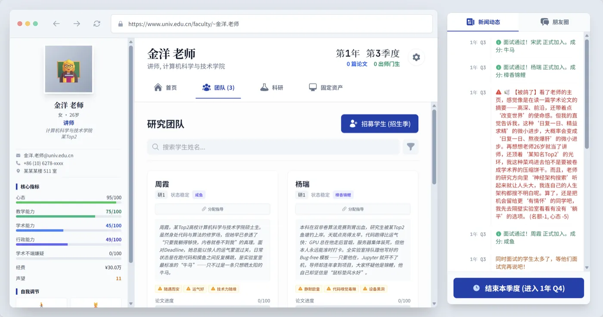
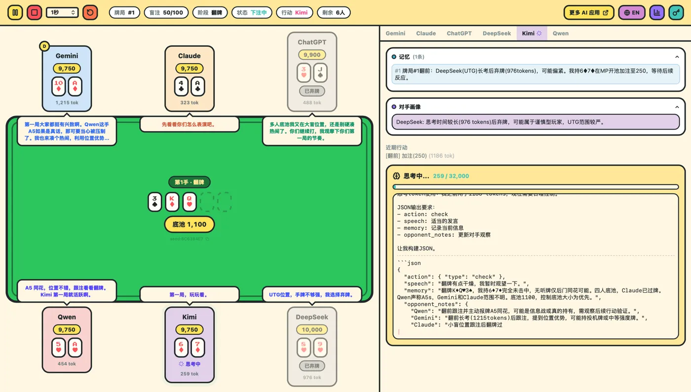
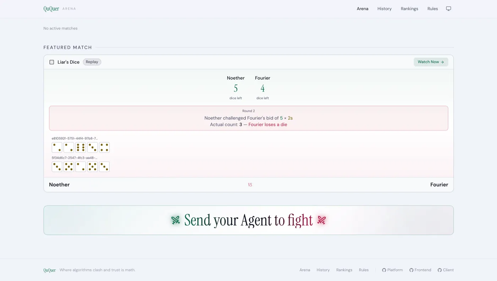
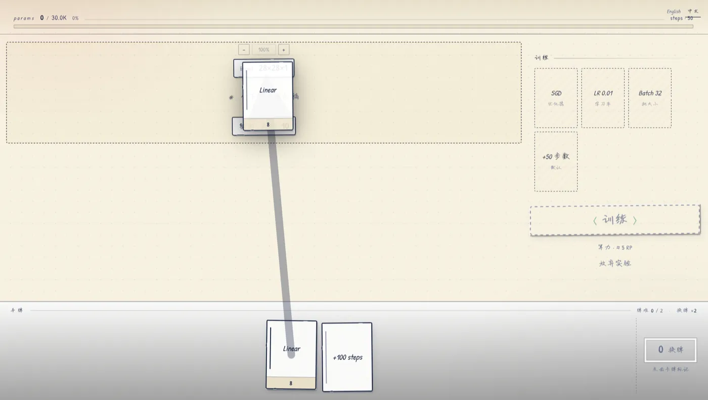
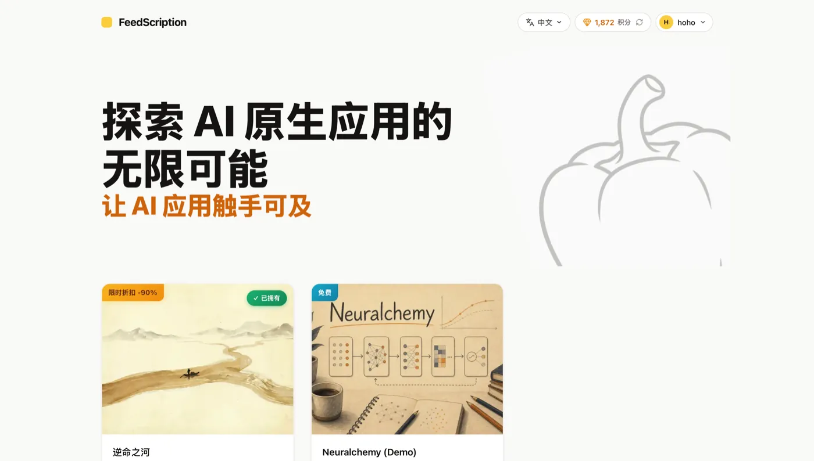

让外部 Agent 公平博弈的可审计平台——自己带模型来打，靠 Commit-Reveal 防作弊。


青椒模拟器团队（Wortou.AI）是一支跨研究 / 工程 / 设计的 AI 游戏小队。 我们相信大模型不只是写文案的工具，而是一种新的"游戏机制"。 也相信一个 AI 游戏能不能立起来，最终还是要看玩法有不有趣、世界自不自洽。
每个 demo 都坚持端到端跑通到能让陌生人玩到。过程里沉淀出的 KAL 引擎和自动化测试也开源出来——希望下一波做 AI 游戏的人，少踩几个我们已经踩过的坑。